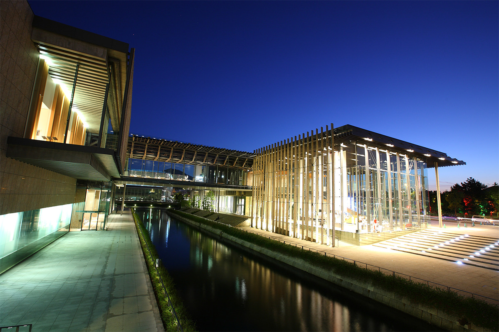
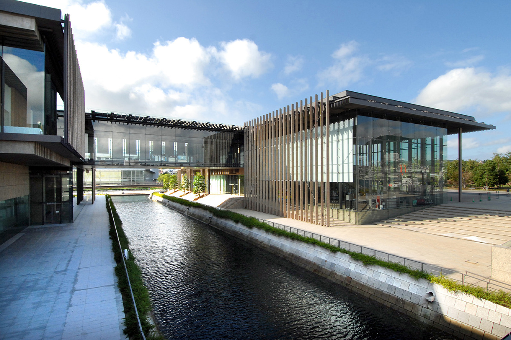
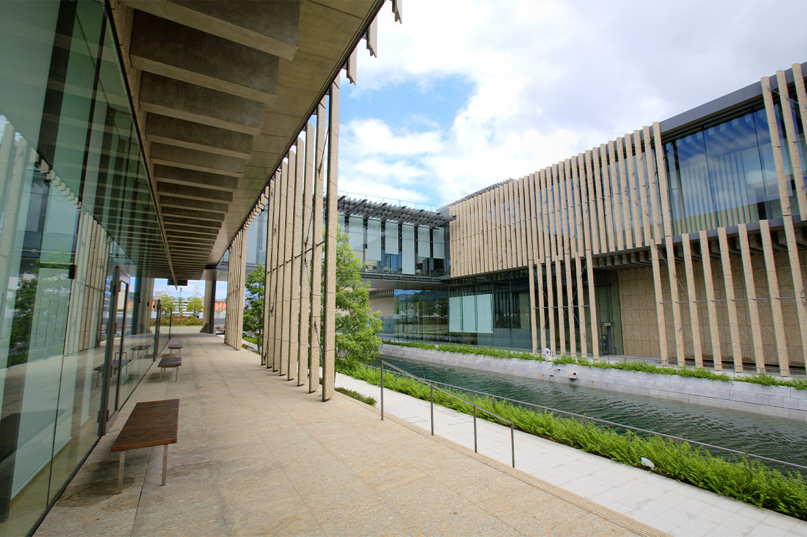
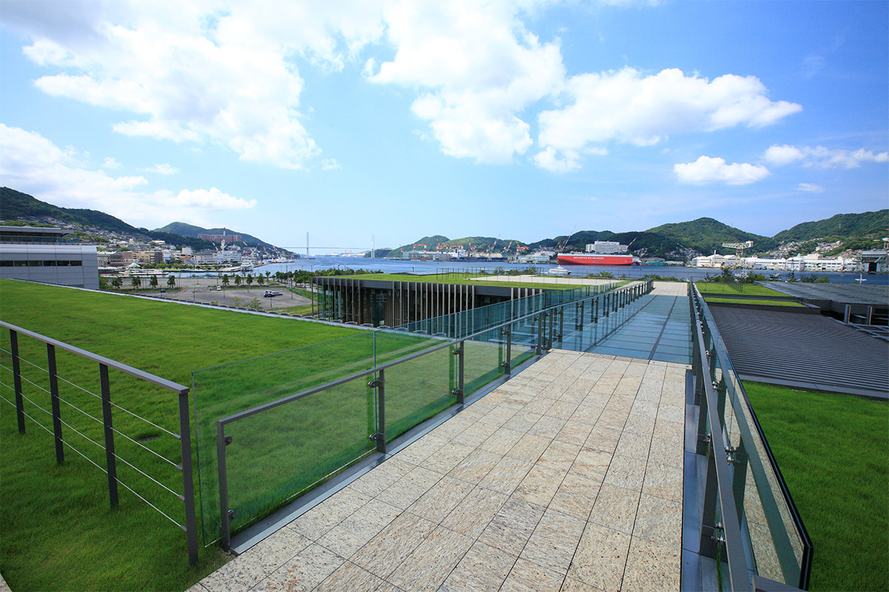
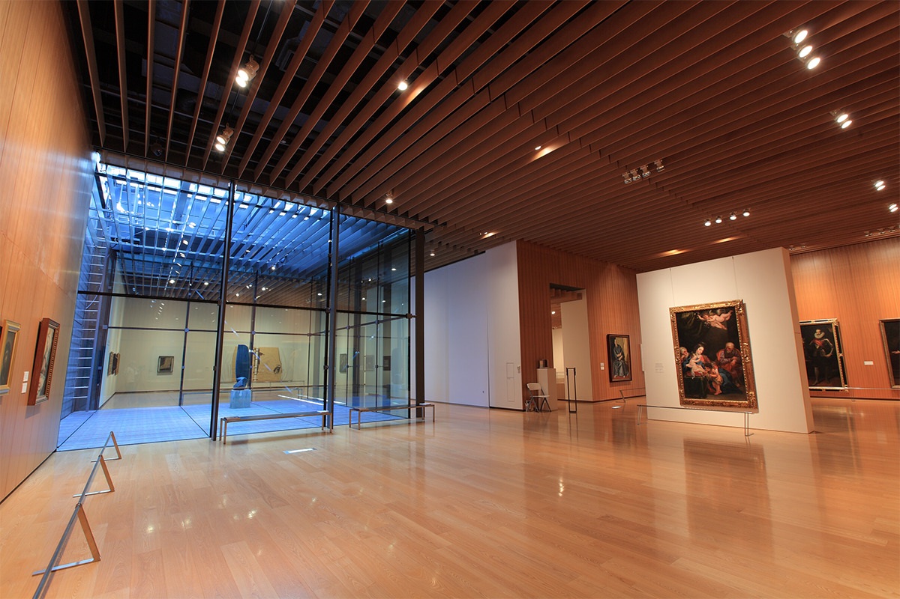
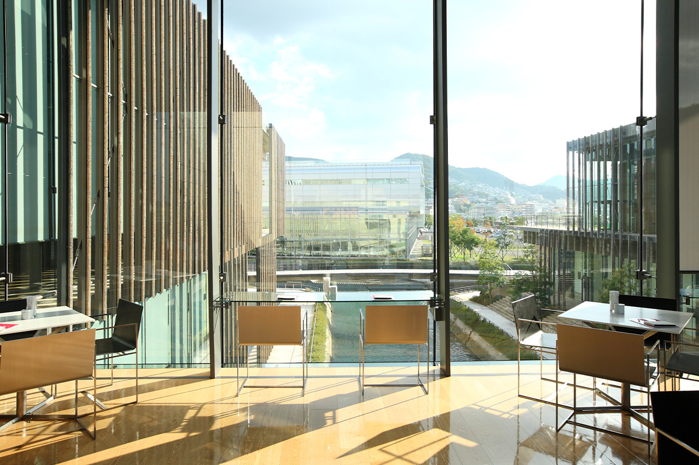
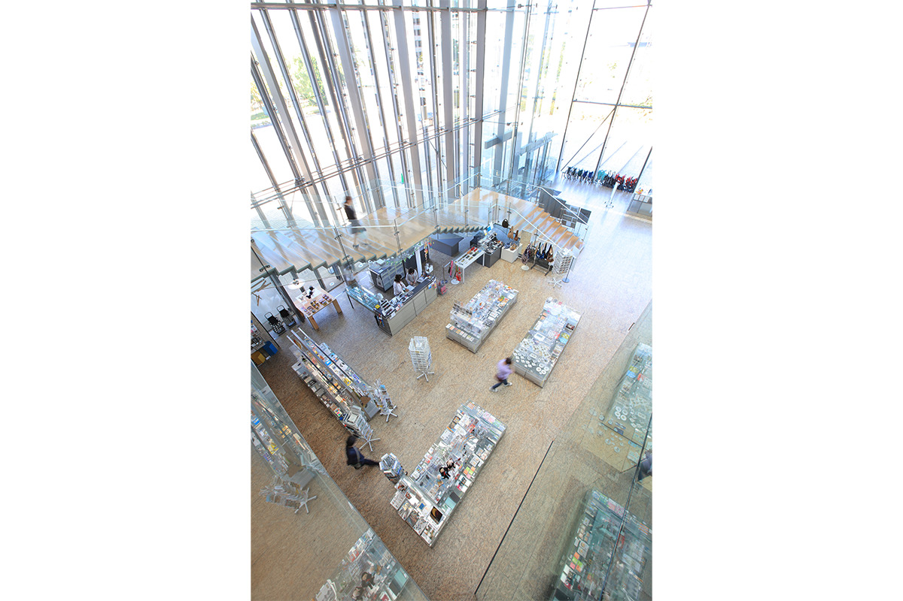
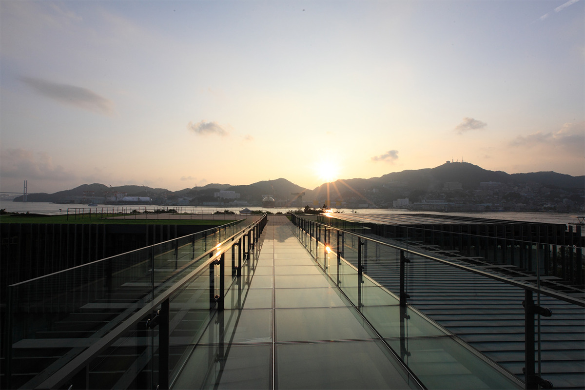

Префектура Нагасаки · Нагасаки · искусство и архитектура
Музей искусств префектуры Нагасаки: здание Кэнго Кумы над каналом у самой гавани

Музей искусств префектуры Нагасаки стоит у самой воды, между портом и городскими кварталами. Его здания разделяет канал, а на крышу можно подняться, как на зелёный холм, и смотреть оттуда на гавань.
Место
Между портом и городом

Музей открылся в 2005 году рядом с Дэдзимой, искусственным островом, через который Япония веками торговала с голландцами. Соседом музея стал прибрежный парк «Нагасаки Мидзубэ-но мори». С запада к зданиям подходит гавань Нагасаки, с востока начинаются городские улицы. Отсюда недалеко до собора Оура и сада Гловера, главных достопримечательностей города, а до оживлённых торговых кварталов можно дойти пешком. И по расположению, и по назначению музей связывает исторический порт с остальным городом.
Канал проходит прямо через территорию, и музеев, стоящих по обе стороны канала, в мире немного. Местные жители любят его как «музей-парк»: по нему гуляют, не замечая, где кончается территория и начинается город. В саду на крыше там и тут стоят работы скульптора, жившего в Нагасаки.
Предшественником нового музея был Музей искусства и истории префектуры. Основу коллекции составляют два направления: искусство, связанное с Нагасаки, начиная с эпохи Мэйдзи (1868–1912), и испанское искусство. Испанская часть выросла из частного собрания, известного как коллекция Сума. Она охватывает всё от средневекового христианского искусства до Пикассо и Дали, а всего в музее около 8000 произведений.
Архитектура
«Дышащий музей» Кэнго Кумы
Здание спроектировал Кэнго Кума, один из самых известных японских архитекторов. Вход залит дневным светом, по галерее гуляет ветер, кафе смотрит на воду, а на крыше шумит зелень: природа здесь участвует в архитектуре наравне с камнем и стеклом.
Идею архитектор назвал «дышащим музеем». Как живое существо вдыхает воздух, здание вбирает впечатления и идеи снаружи, а потом возвращает их в новом виде и растёт вместе с людьми и городом вокруг.

Первое, что бросается в глаза, это канал посреди участка. Музей состоит из двух корпусов, и над водой их соединяет мост, который называют «галереей-мостом». В одном корпусе устроены галереи, открытые для горожан, в другом находятся выставочные залы и всё, что положено настоящему музею. Вдоль канала между корпусами остаётся свободное пространство, где можно читать в библиотеке, заниматься музыкой в студии, гулять или есть свой обед под навесом.
Фасады собраны из гранитных ламелей, и вертикальные линии сразу выдают почерк Кумы. Ламели не отрезают здание от улицы, а связывают их. Гладкое стекло или стена останавливают взгляд, а ламели стоят то чаще, то реже, будто в музыкальном ритме, и взгляд всё время за них цепляется. Получается полупрозрачная «мягкая» оболочка, у которой граница между внутренним и внешним размыта. Ламели пропускают свет внутрь и в то же время делят пространство, не закрывая его, поэтому слои полупрозрачного пространства уходят вглубь один за другим. Внутри светло и просторно, а под жарким солнцем Нагасаки ламели отбрасывают прохладную глубокую тень.
Крыша
Сад над гаванью

Над корпусом с галереями насыпан наклонный земляной склон, засаженный деревьями. Этот склон поднимается к саду на крыше и соединяет его с зеленью соседнего парка. По словам Кэнго Кумы, такой приём нужен, чтобы «заново соединить здание с землёй и слить его с местом». Музей и парк здесь превращаются в одно целое, а сад на крыше с видом на всю гавань стал самым любимым местом посетителей.
Залы
Коллекция, кафе и магазин
Постоянная экспозиция

В постоянной экспозиции показывают собственную коллекцию музея. Залов пять, и потолки у них разной высоты, от 3,5 до 5 метров. Смотреть на искусство приятно и во внутреннем дворике, куда падает мягкий дневной свет.
Кафе на мосту

Кафе устроено прямо на галерее-мосту между двумя корпусами. Со всех сторон стекло, и за едой можно смотреть на канал и город. В меню используют местные продукты, сезонные овощи и фрукты. Столы и стулья для кафе тоже придумал Кэнго Кума.
Музейный магазин

Вестибюль поднимается на высоту около 12 метров и с трёх сторон застеклён, поэтому в нём светло и просторно. В одном его углу и устроен музейный магазин. Здесь продают сувениры, сделанные специально для музея, вещи от художников, связанных с Нагасаки, предметы хорошего дизайна и книги. Отсюда можно увезти и память о музее, и подарок из Нагасаки.

Светлый вход, продуваемая ветром галерея, кафе над водой и зелень на крыше меняются вместе с временами года, поэтому в музей стоит заходить не один раз. Вход в здание бесплатный, а билет в залы коллекции для взрослых стоил 420 иен в 2022 году.
Музей искусств префектуры Нагасаки
- Адрес
- префектура Нагасаки, Нагасаки, Дэдзима-мати, 2-1
- Телефон
- +81 95-833-2110
- Часы работы
- 10:00–20:00 (вход в залы до 19:30)
- Выходные
- второй и четвёртый понедельник месяца (если это праздник, то следующий день), новогодние праздники
- Цены / Вход
- вход в здание бесплатный. Залы коллекции: взрослые 420 иен, студенты и посетители от 70 лет 310 иен, школьники 210 иен; для групп от 15 человек 340, 250 и 170 иен; школьники, живущие в префектуре, бесплатно. Временные выставки: цена зависит от выставки